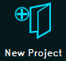
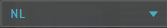
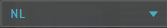

import logging;reload(logging)
FORMAT="%(asctime)-8s %(message)s"
logging.basicConfig(format=FORMAT, filename="Wizard-Timings-test.log", level=logging.DEBUG)
logging.info("[info] Create new project 'SikuliX-Editor', don't save and exit...")
App.open("C:\Users\Tygron\AppData\Local\Tygron Engine Test\Tygron Engine Test.exe")
wait(,10)
#dragDrop(Pattern("1459500265389.png").targetOffset(256,-120), Pattern("1459500265389.png").targetOffset(-283,-126))
#type(Key.BACKSPACE)
#paste(Pattern("1458821531951.png").targetOffset(-5,-121),"qaautotest1@tygron.com")
paste(Pattern().targetOffset(-12,-66),"autotest2qa")
click(Pattern().targetOffset(-5,48))
wait(, 30)
click()
wait( ,10)
paste(Pattern().targetOffset(-24,-222),"SikuliX-Editor")
click(Pattern(
,10)
paste(Pattern().targetOffset(-24,-222),"SikuliX-Editor")
click(Pattern( ).targetOffset(-15,-53))
click()
wait(,10)
click(Pattern().targetOffset(226,11))
wait(
).targetOffset(-15,-53))
click()
wait(,10)
click(Pattern().targetOffset(226,11))
wait( ,10)
paste(Pattern(
,10)
paste(Pattern( ).targetOffset(-215,-157),"Arnhem")
type(Key.ENTER)
wait(
).targetOffset(-215,-157),"Arnhem")
type(Key.ENTER)
wait( ,30)
click(Pattern(
,30)
click(Pattern( ).targetOffset(411,303))
#wait("1458822970279.png",150)
waittime = 1
for x in range(0, 300):
if exists(
).targetOffset(411,303))
#wait("1458822970279.png",150)
waittime = 1
for x in range(0, 300):
if exists( , waittime):
print'[success] creating project in %d seconds was successful!' % (x*waittime)
logging.info('[success] Creating project in %d seconds was successful!' % (x*waittime))
break
if not exists(, waittime):
print'[error] creating project failed after %d seconds!' % (x*waittime)
logging.error('[error] creating project failed after %d seconds!' % (x*waittime))
exit(1)
#sleep(2)
find(
, waittime):
print'[success] creating project in %d seconds was successful!' % (x*waittime)
logging.info('[success] Creating project in %d seconds was successful!' % (x*waittime))
break
if not exists(, waittime):
print'[error] creating project failed after %d seconds!' % (x*waittime)
logging.error('[error] creating project failed after %d seconds!' % (x*waittime))
exit(1)
#sleep(2)
find( )
click()
wait()
click(Pattern().targetOffset(-6,93))
wait(
)
click()
wait()
click(Pattern().targetOffset(-6,93))
wait( ,10)
click(Pattern().targetOffset(49,46))
,10)
click(Pattern().targetOffset(49,46))